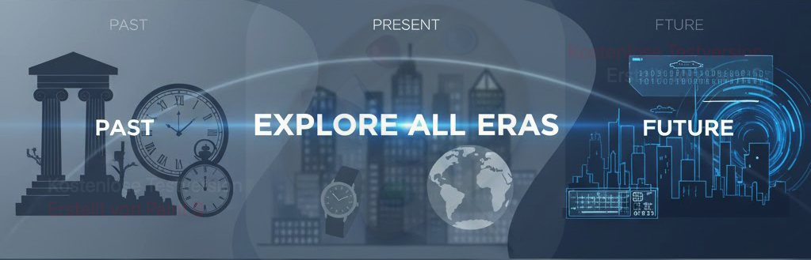
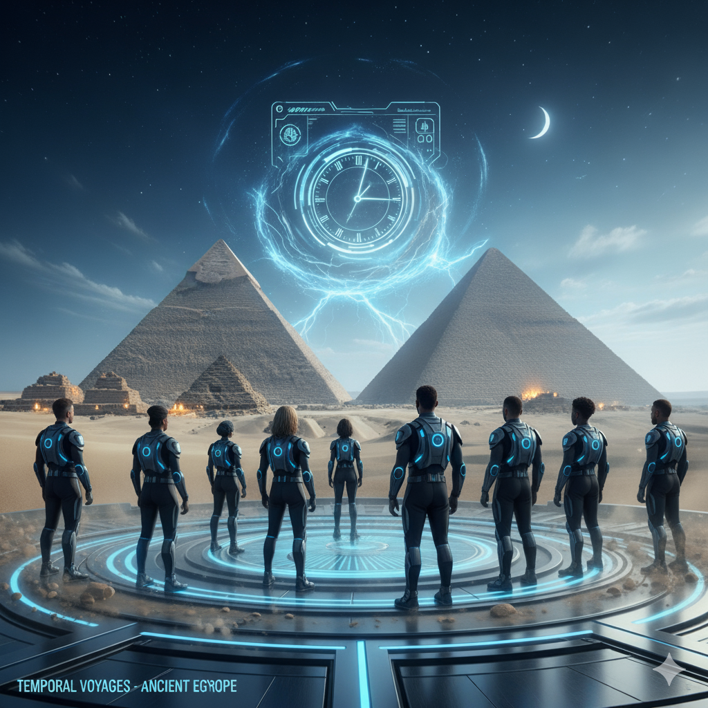
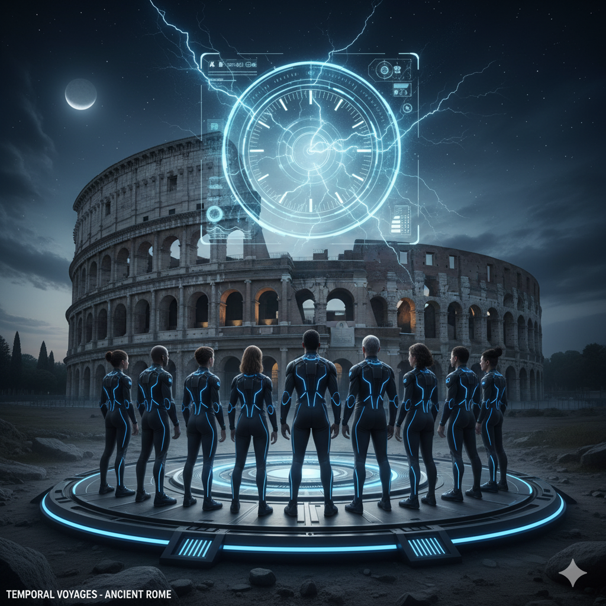
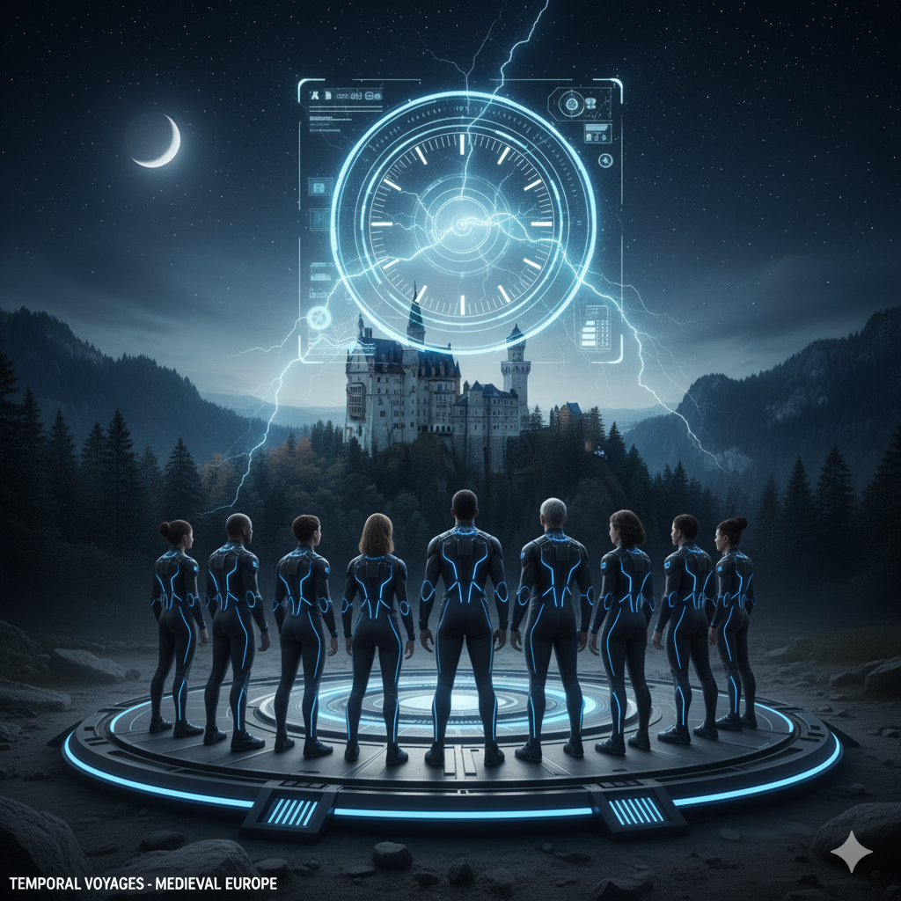
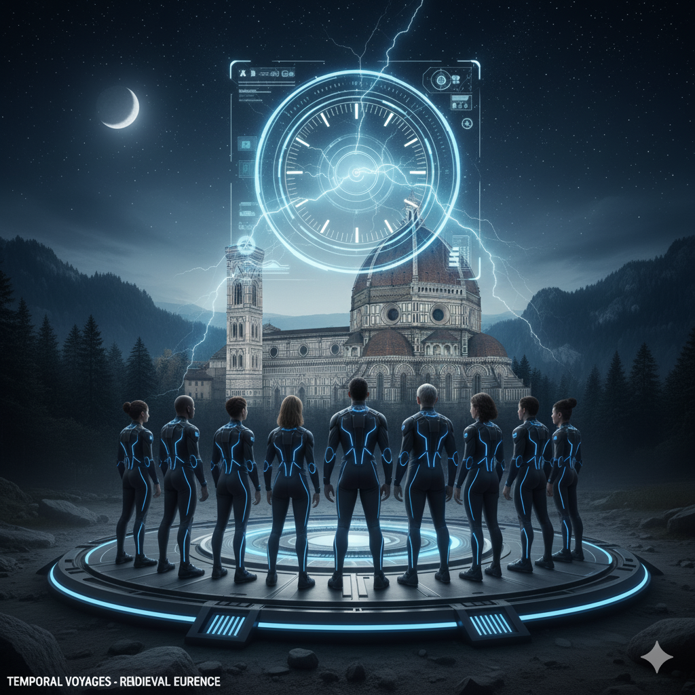
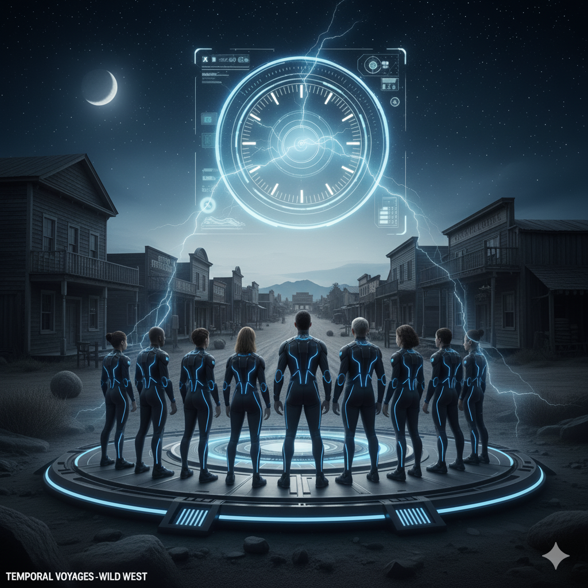
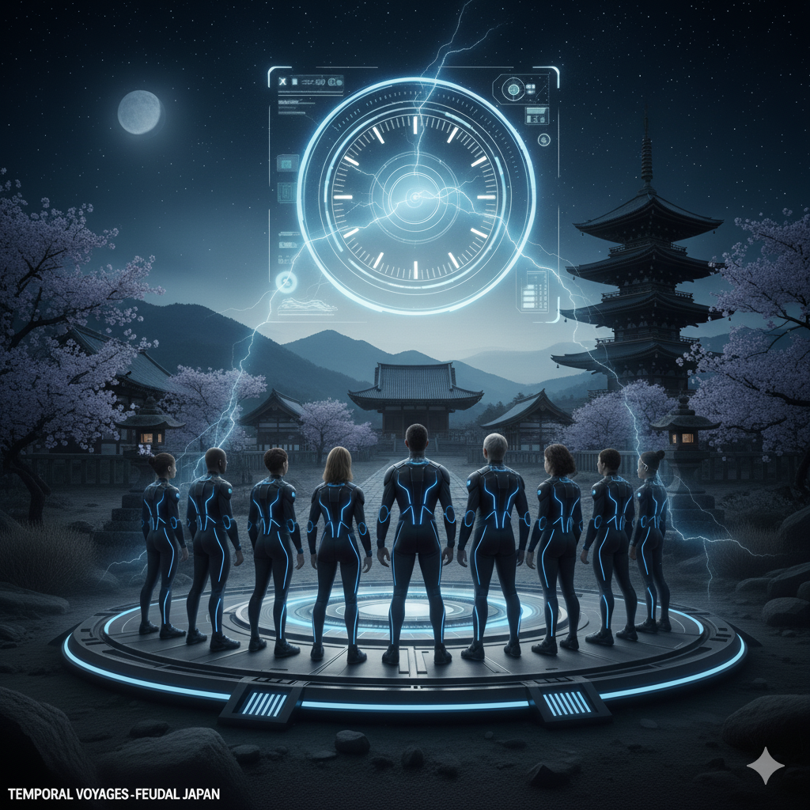
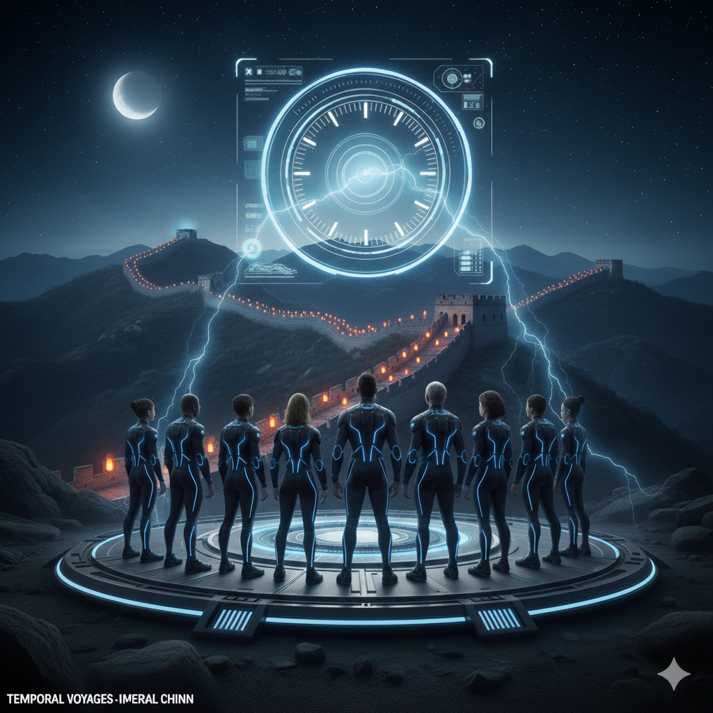

Timeless Voyages: The Ultimate Time Travel Experience - partnering with Temporal Voyages since 3021
Welcome to Timeless Voyages, your gateway to the past, present, and future. Our state-of-the-art time travel agency offers unparalleled service, ensuring that every journey through time is not only safe but also an unforgettable adventure. With a dedicated team of experts, cutting-edge technology, and meticulous preparation, we guarantee you will create memories that will last a lifetime.
Our Timeless Voyages:
Embark on an extraordinary voyage through time with our meticulously crafted itineraries designed to cater to all interests and preferences. From exploring ancient civilizations in Egypt and Greece to witnessing pivotal moments in history like the signing of the Magna Carta or walking alongside Leonardo da Vinci during the Renaissance, we have carefully curated a diverse range of destinations for you to choose from.

Time Travel Process:
At Timeless Voyages, we understand that time travel can be both thrilling and mysterious. Allow us to guide you through our tried-and-tested process:
Consultation: Our experienced team will discuss your interests and preferences with you in detail to create a personalized itinerary tailored specifically for you.
Preparation: In the days leading up to your journey, we will provide you with all necessary preparations and instructions, ensuring you are well-equipped for the challenges and wonders of time travel.
Departure: Arrive at our Timeless Voyages center where you'll undergo a brief medical check-up and be briefed on safety protocols before being transported through time.
Exploration: Immerse yourself in your chosen destination, guided by our knowledgeable experts who will help you make the most out of your time travel experience.
Safety Measures:
Your well-being is our top priority, which is why we have implemented comprehensive safety measures to ensure a secure and enjoyable journey for all our clients. Our state-of-the-art transportation technology guarantees minimal time disruption, while carefully selected destinations minimize potential hazards, allowing you to focus on the excitement of your adventure.
Travel target locations (gallery):

Ancient Egypt Pyramids of Giza

Ancient Rome Colosseum

Medieval Europe Castle Neuschwanstein

Renaissance Florencey DuomoVictorian London Big Ben

Wild West American Frontier

Feudal Japan Kyoto Temple

Imperial China Great Wall